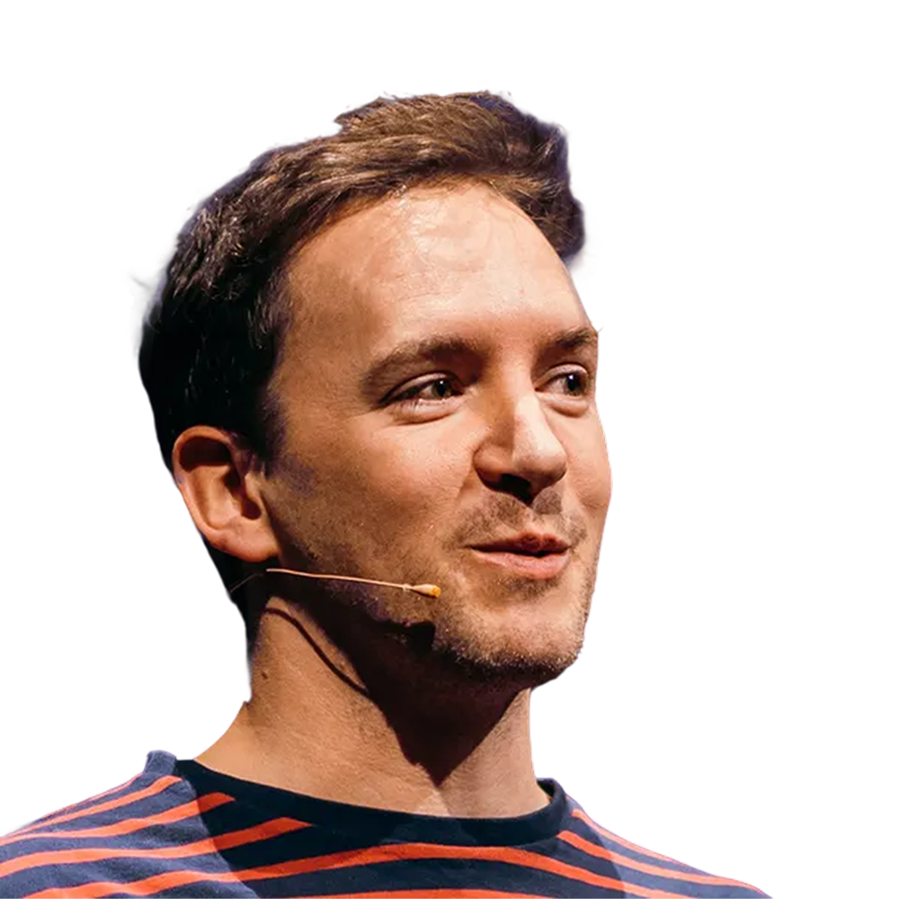

Daniel Roe
Team lead, Nuxt @ Vercel
Daniel leads the Nuxt core team. Previously, he was CTO of a SaaS startup and founder of a creative agency focusing on clarity of vision and message. He is part of the team at Vercel where he is employed to work full-time on Nuxt. His open source work has a focus in the Vue.js and Nuxt ecosystems. He’s a keynote speaker at conferences around the world, particularly around frontend, web performance, serverless and software architecture.
Working backwards
May 14 - 11:15h
Whether you’re building devtools or building APIs for your own team to use, nailing developer experience is essential.
In this in-depth talk, Daniel will talk about designing developer APIs, improving DX and writing code that’s both maintainable and increases developer productivity. He’ll illustrate his points using real world code.